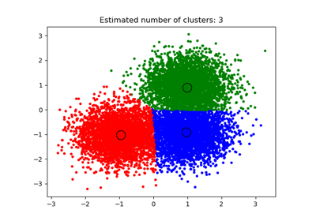

sklearn.cluster.MeanShift¶
-
class
sklearn.cluster.MeanShift(bandwidth=None, seeds=None, bin_seeding=False, min_bin_freq=1, cluster_all=True, n_jobs=None)[source]¶ Mean shift clustering using a flat kernel.
Mean shift clustering aims to discover “blobs” in a smooth density of samples. It is a centroid-based algorithm, which works by updating candidates for centroids to be the mean of the points within a given region. These candidates are then filtered in a post-processing stage to eliminate near-duplicates to form the final set of centroids.
Seeding is performed using a binning technique for scalability.
Read more in the User Guide.
- Parameters
- bandwidthfloat, optional
Bandwidth used in the RBF kernel.
If not given, the bandwidth is estimated using sklearn.cluster.estimate_bandwidth; see the documentation for that function for hints on scalability (see also the Notes, below).
- seedsarray, shape=[n_samples, n_features], optional
Seeds used to initialize kernels. If not set, the seeds are calculated by clustering.get_bin_seeds with bandwidth as the grid size and default values for other parameters.
- bin_seedingboolean, optional
If true, initial kernel locations are not locations of all points, but rather the location of the discretized version of points, where points are binned onto a grid whose coarseness corresponds to the bandwidth. Setting this option to True will speed up the algorithm because fewer seeds will be initialized. default value: False Ignored if seeds argument is not None.
- min_bin_freqint, optional
To speed up the algorithm, accept only those bins with at least min_bin_freq points as seeds. If not defined, set to 1.
- cluster_allboolean, default True
If true, then all points are clustered, even those orphans that are not within any kernel. Orphans are assigned to the nearest kernel. If false, then orphans are given cluster label -1.
- n_jobsint or None, optional (default=None)
The number of jobs to use for the computation. This works by computing each of the n_init runs in parallel.
Nonemeans 1 unless in ajoblib.parallel_backendcontext.-1means using all processors. See Glossary for more details.
- Attributes
- cluster_centers_array, [n_clusters, n_features]
Coordinates of cluster centers.
- labels_ :
Labels of each point.
Notes
Scalability:
Because this implementation uses a flat kernel and a Ball Tree to look up members of each kernel, the complexity will tend towards O(T*n*log(n)) in lower dimensions, with n the number of samples and T the number of points. In higher dimensions the complexity will tend towards O(T*n^2).
Scalability can be boosted by using fewer seeds, for example by using a higher value of min_bin_freq in the get_bin_seeds function.
Note that the estimate_bandwidth function is much less scalable than the mean shift algorithm and will be the bottleneck if it is used.
References
Dorin Comaniciu and Peter Meer, “Mean Shift: A robust approach toward feature space analysis”. IEEE Transactions on Pattern Analysis and Machine Intelligence. 2002. pp. 603-619.
Examples
>>> from sklearn.cluster import MeanShift >>> import numpy as np >>> X = np.array([[1, 1], [2, 1], [1, 0], ... [4, 7], [3, 5], [3, 6]]) >>> clustering = MeanShift(bandwidth=2).fit(X) >>> clustering.labels_ array([1, 1, 1, 0, 0, 0]) >>> clustering.predict([[0, 0], [5, 5]]) array([1, 0]) >>> clustering MeanShift(bandwidth=2)
Methods
fit(self, X[, y])Perform clustering.
fit_predict(self, X[, y])Performs clustering on X and returns cluster labels.
get_params(self[, deep])Get parameters for this estimator.
predict(self, X)Predict the closest cluster each sample in X belongs to.
set_params(self, \*\*params)Set the parameters of this estimator.
-
__init__(self, bandwidth=None, seeds=None, bin_seeding=False, min_bin_freq=1, cluster_all=True, n_jobs=None)[source]¶ Initialize self. See help(type(self)) for accurate signature.
-
fit(self, X, y=None)[source]¶ Perform clustering.
- Parameters
- Xarray-like, shape=[n_samples, n_features]
Samples to cluster.
- yIgnored
-
fit_predict(self, X, y=None)[source]¶ Performs clustering on X and returns cluster labels.
- Parameters
- Xndarray, shape (n_samples, n_features)
Input data.
- yIgnored
not used, present for API consistency by convention.
- Returns
- labelsndarray, shape (n_samples,)
cluster labels
-
get_params(self, deep=True)[source]¶ Get parameters for this estimator.
- Parameters
- deepboolean, optional
If True, will return the parameters for this estimator and contained subobjects that are estimators.
- Returns
- paramsmapping of string to any
Parameter names mapped to their values.
-
predict(self, X)[source]¶ Predict the closest cluster each sample in X belongs to.
- Parameters
- X{array-like, sparse matrix}, shape=[n_samples, n_features]
New data to predict.
- Returns
- labelsarray, shape [n_samples,]
Index of the cluster each sample belongs to.
-
set_params(self, **params)[source]¶ Set the parameters of this estimator.
The method works on simple estimators as well as on nested objects (such as pipelines). The latter have parameters of the form
<component>__<parameter>so that it’s possible to update each component of a nested object.- Returns
- self
Examples using sklearn.cluster.MeanShift¶
